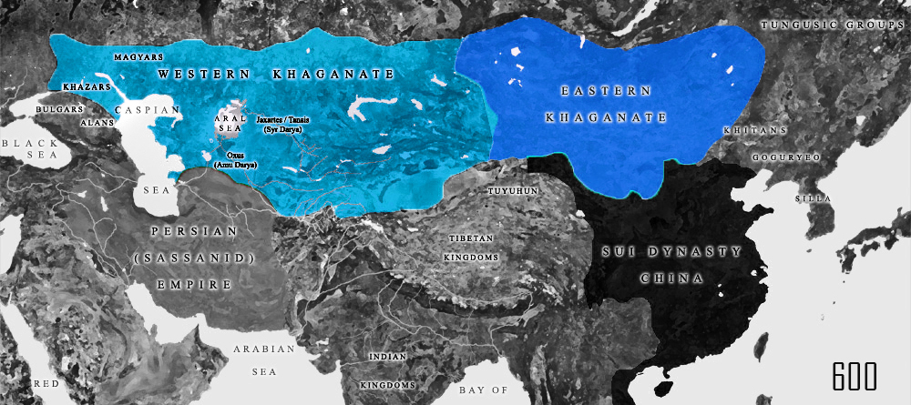

Göktürk civil war
(581-603)
Succession Crisis
From the beginning the Turkic Khaganate was ruled in what was an effectively two distinct parts, east and west.
In 581 Khagan Taspar died resulting in a crisis of succession.
Taspar had chosen Khagan Muqan's son Apa to be his successor, but the tribe chieftans chose Taspar's son Anlo. Anlo soon yielded to Issik's son Ishbara Qaghan.
Ishbara (581-87) took control of the eastern seat of power, but Apa (581-87) went to the west and gained support that led to a civil war between tribes.
In the conflict that followed, several memebers of the Royal Family fought each other for control of the Empire. It may be helpful to make reference to the family tree for seeing the relationships that guided the conflict.
In the conflict that followed, several memebers of the Royal Family fought each other for control of the Empire. It may be helpful to make reference to the family tree for seeing the relationships that guided the conflict.
Foriegn Intervention
In 577 the Northern Zhou Dynasty managed to reunite northern China, and in 588 the under the Emperor Wen Sui had gained control of a nearly unified China.
By 584 Ishbara had pushed Apa west and was nearing victory, but then Apa allied with his relative Tardu and his brother Tamgan, and Ishbara was defeated.
Ishbara approached the strengthening Sui dynasty and offered them fealty in help for defeating his enemies.
With the Chinese intervention, the forces of the Western Khaganate were forced to retreat.
Suddenly in a stalemate, in 587 both Ishbara and Apa died, leaving both of sides of the empire scrambling for new leaders. In the West Tardu became Khagan (587-603) while in the east Ishbara's brother Bagha became Khagan (587-89) followed by Ishbara's son Tulan Khagan (589-99).
Suddenly in a stalemate, in 587 both Ishbara and Apa died, leaving both of sides of the empire scrambling for new leaders. In the West Tardu became Khagan (587-603) while in the east Ishbara's brother Bagha became Khagan (587-89) followed by Ishbara's son Tulan Khagan (589-99).
Final Separation

Khaganate after the split in 603 CE
After the death of Tulan in 599, Tardu declared himself to be khagan of a united Göktürk khaganate.
But this pronouncement had limited factual basis, and he lacked the support of several chieftans.
To build support, he began a campaign against China. The campaign was a disaster and his army suffered intensely from poisoned waterwells during the long expedition through the steppe.
Finally, he had to retreat without ever having engaged in a major battle.
This failure led to a rebellion, during which he disappeared from power (likely having been killed) in 603 or 604.
Khaganate after the split in 603 CE
From this point forward the spilt in the empire was established. In the east Yami Qaghan (603-609) took over and established a decidely pro-chinese diplomatic policy. In the west, the struggle for power continued with Heshana Khagan (603-611) taking the greatest degree of control before being eventually defeated by another relative.